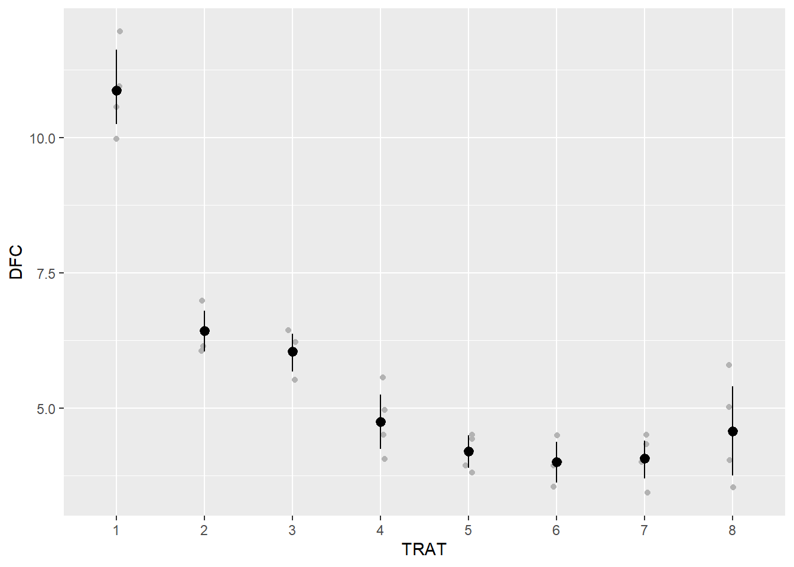
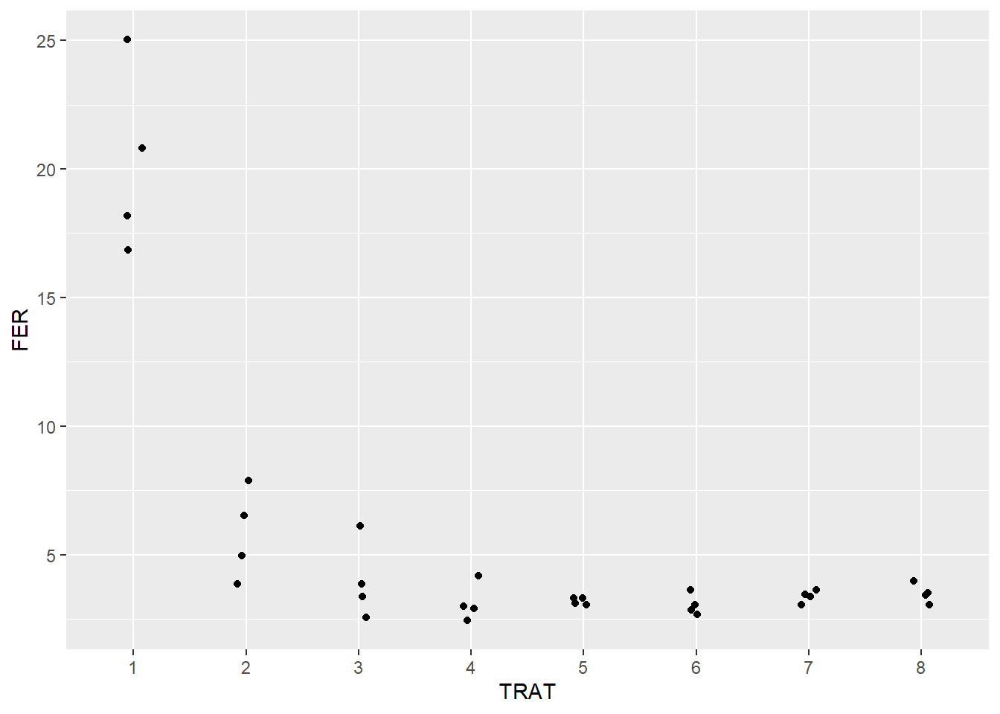
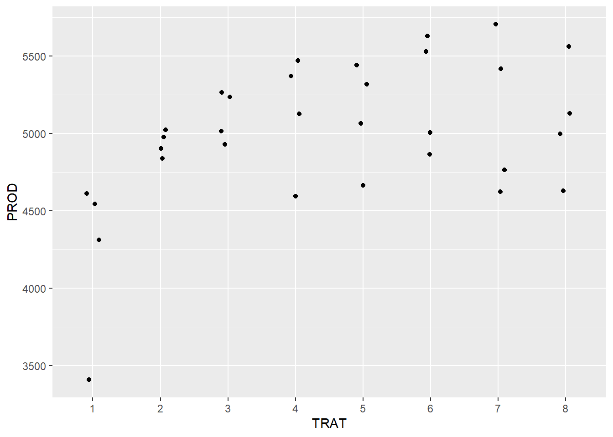
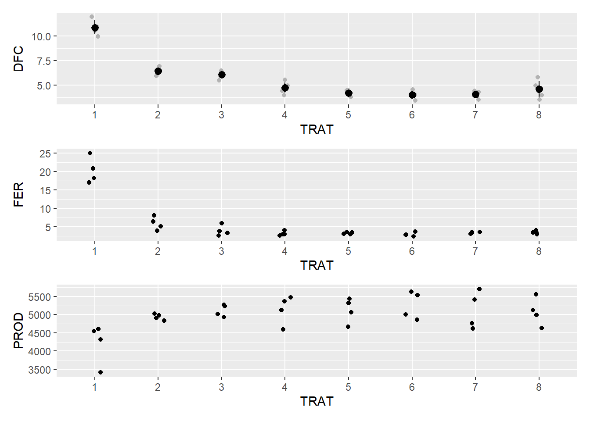
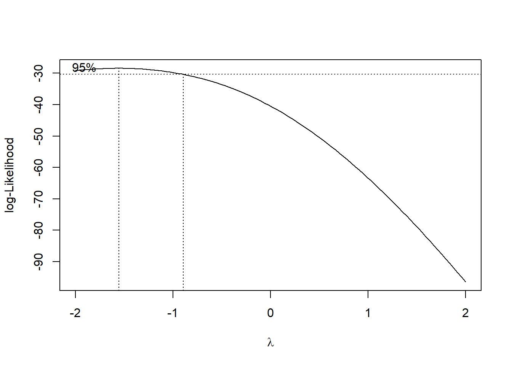
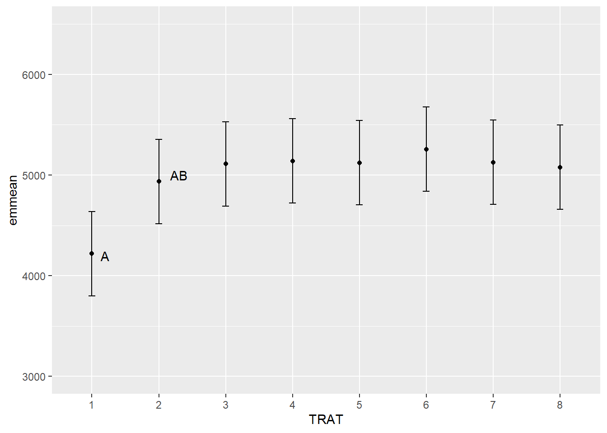
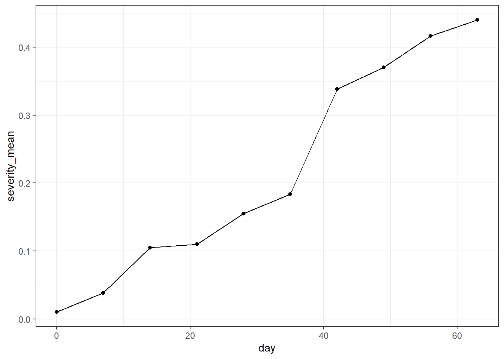
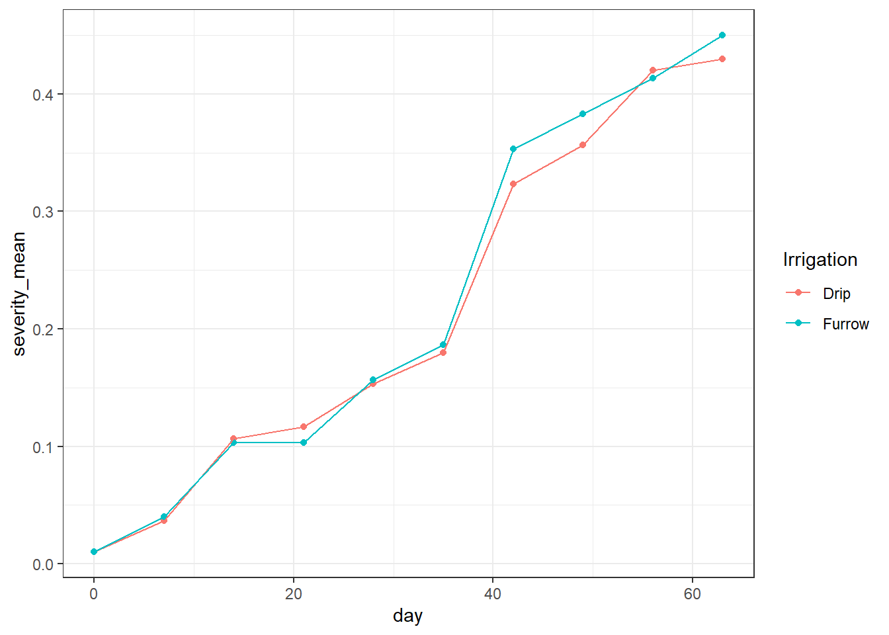
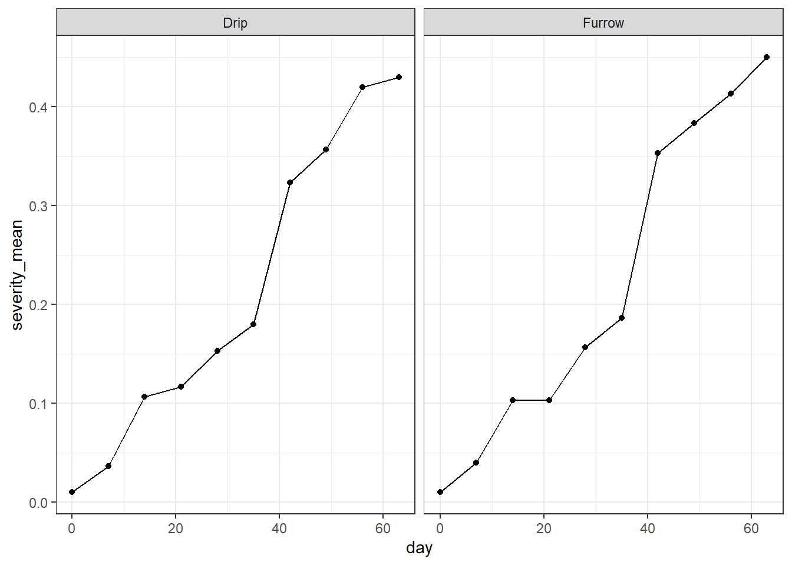

library(tidyverse)
library(gsheet)
library(gsheet)
library(tidyverse)
library(patchwork)
library(performance)
library(DHARMa)
library(emmeans)
library(multcomp)
library(multcompView)
library(MASS)
library(epifitter)1. Delineamento de Blocos Casualizados (DBC)
2. Carregamento de pacotes e Importação dos dados
soja <- gsheet2tbl("https://docs.google.com/spreadsheets/d/1bq2N19DcZdtax2fQW9OHSGMR0X2__Z9T/edit#gid=866852711")3. ANOVA
soja <- soja |>
mutate(TRAT = as.factor(TRAT),
BLOCO = as.factor(BLOCO))4. Ferrugem e Produtividade
dfc <- soja |>
ggplot(aes(TRAT, DFC))+
geom_jitter(width = 0.05, color = "gray70")+
stat_summary(fun.data = "mean_cl_boot", color = "black")
dfc
fer <- soja |>
ggplot(aes(TRAT, FER))+
geom_jitter(width = 0.1)
fer
prod <- soja |>
ggplot(aes(TRAT, PROD))+
geom_jitter(width = 0.1)
prod
library(patchwork)
dfc / fer / prod
Os pontos pretos representam a média e a linha o intervalo de confiança.
5. Anova DFC
Foi testadas as premissas: normalidade e homocedasticidade e em seguida realizou o cálculo de médias e comparações entre médias.
aov_dfc <- lm(DFC ~ TRAT+BLOCO, #Bloco entra como efeito fixo ao colocar o "+"
data = soja)
anova(aov_dfc)Analysis of Variance Table
Response: DFC
Df Sum Sq Mean Sq F value Pr(>F)
TRAT 7 149.299 21.3284 51.5490 8.218e-12 ***
BLOCO 3 0.461 0.1538 0.3716 0.7743
Residuals 21 8.689 0.4138
---
Signif. codes: 0 '***' 0.001 '**' 0.01 '*' 0.05 '.' 0.1 ' ' 1#Grau de liberdade = n-1
# F é a divisão entre os Mean Square
# Trat é extremamente significativo
library(performance)
check_heteroscedasticity(aov_dfc)OK: Error variance appears to be homoscedastic (p = 0.532).check_normality(aov_dfc)OK: residuals appear as normally distributed (p = 0.978).library(emmeans)
medias_dfc <- emmeans(aov_dfc, ~ TRAT)
medias_dfc TRAT emmean SE df lower.CL upper.CL
1 10.88 0.322 21 10.21 11.54
2 6.42 0.322 21 5.76 7.09
3 6.05 0.322 21 5.38 6.72
4 4.75 0.322 21 4.08 5.42
5 4.20 0.322 21 3.53 4.87
6 4.00 0.322 21 3.33 4.67
7 4.08 0.322 21 3.41 4.74
8 4.58 0.322 21 3.91 5.24
Results are averaged over the levels of: BLOCO
Confidence level used: 0.95 pwpm(medias_dfc) 1 2 3 4 5 6 7 8
1 [10.87] <.0001 <.0001 <.0001 <.0001 <.0001 <.0001 <.0001
2 4.450 [ 6.42] 0.9896 0.0249 0.0017 0.0006 0.0009 0.0107
3 4.825 0.375 [ 6.05] 0.1329 0.0107 0.0040 0.0058 0.0628
4 6.125 1.675 1.300 [ 4.75] 0.9202 0.7173 0.8072 0.9999
5 6.675 2.225 1.850 0.550 [ 4.20] 0.9998 1.0000 0.9896
6 6.875 2.425 2.050 0.750 0.200 [ 4.00] 1.0000 0.9020
7 6.800 2.350 1.975 0.675 0.125 -0.075 [ 4.07] 0.9499
8 6.300 1.850 1.475 0.175 -0.375 -0.575 -0.500 [ 4.57]
Row and column labels: TRAT
Upper triangle: P values adjust = "tukey"
Diagonal: [Estimates] (emmean)
Lower triangle: Comparisons (estimate) earlier vs. laterlibrary(multcomp)
library(multcompView)
cld(medias_dfc, Letters = letters) TRAT emmean SE df lower.CL upper.CL .group
6 4.00 0.322 21 3.33 4.67 a
7 4.08 0.322 21 3.41 4.74 a
5 4.20 0.322 21 3.53 4.87 a
8 4.58 0.322 21 3.91 5.24 ab
4 4.75 0.322 21 4.08 5.42 ab
3 6.05 0.322 21 5.38 6.72 bc
2 6.42 0.322 21 5.76 7.09 c
1 10.88 0.322 21 10.21 11.54 d
Results are averaged over the levels of: BLOCO
Confidence level used: 0.95
P value adjustment: tukey method for comparing a family of 8 estimates
significance level used: alpha = 0.05
NOTE: If two or more means share the same grouping symbol,
then we cannot show them to be different.
But we also did not show them to be the same. #Eficácia no controle (%) = (1- (emmean do tratamento/emmean da testemunha))*1006. ANOVA Ferrugem
Foi testadas as premissas: normalidade e homocedasticidade e em seguida realizou o cálculo de médias e comparações entre médias.
aov_fer <- lm(FER ~ TRAT+BLOCO,
data = soja)
anova(aov_fer)Analysis of Variance Table
Response: FER
Df Sum Sq Mean Sq F value Pr(>F)
TRAT 7 978.87 139.838 55.1717 4.218e-12 ***
BLOCO 3 3.84 1.279 0.5045 0.6834
Residuals 21 53.23 2.535
---
Signif. codes: 0 '***' 0.001 '**' 0.01 '*' 0.05 '.' 0.1 ' ' 1library(performance)
check_heteroscedasticity(aov_fer)Warning: Heteroscedasticity (non-constant error variance) detected (p < .001).check_normality(aov_fer)Warning: Non-normality of residuals detected (p = 0.008).Os dados não apresentaram distribuição normal e homogeneidade de variâncias.
6.1 Transformação dos dados
Foi realizada a transformação dos dados e checada as premissas: normalidade e homocedasticidade.
soja <- soja |>
mutate(FER2 = log(FER))
aov_fer2 <- lm(FER2 ~ TRAT+BLOCO,
data = soja)
anova(aov_fer2)Analysis of Variance Table
Response: FER2
Df Sum Sq Mean Sq F value Pr(>F)
TRAT 7 11.5210 1.64585 42.9665 4.838e-11 ***
BLOCO 3 0.2064 0.06880 1.7961 0.1788
Residuals 21 0.8044 0.03831
---
Signif. codes: 0 '***' 0.001 '**' 0.01 '*' 0.05 '.' 0.1 ' ' 1check_normality(aov_fer2)OK: residuals appear as normally distributed (p = 0.255).check_heteroscedasticity(aov_fer2)Warning: Heteroscedasticity (non-constant error variance) detected (p = 0.035).medias_fer <- emmeans(aov_fer2, ~ TRAT)
medias_fer TRAT emmean SE df lower.CL upper.CL
1 3.00 0.0979 21 2.793 3.20
2 1.74 0.0979 21 1.533 1.94
3 1.34 0.0979 21 1.133 1.54
4 1.12 0.0979 21 0.921 1.33
5 1.18 0.0979 21 0.972 1.38
6 1.09 0.0979 21 0.888 1.30
7 1.21 0.0979 21 1.011 1.42
8 1.25 0.0979 21 1.044 1.45
Results are averaged over the levels of: BLOCO
Confidence level used: 0.95 pwpm(medias_fer) 1 2 3 4 5 6 7 8
1 [3.00] <.0001 <.0001 <.0001 <.0001 <.0001 <.0001 <.0001
2 1.2600 [1.74] 0.1252 0.0048 0.0110 0.0028 0.0204 0.0343
3 1.6600 0.4000 [1.34] 0.7832 0.9335 0.6440 0.9843 0.9976
4 1.8718 0.6118 0.2118 [1.12] 0.9999 1.0000 0.9976 0.9842
5 1.8211 0.5611 0.1611 -0.0507 [1.18] 0.9984 1.0000 0.9994
6 1.9052 0.6452 0.2452 0.0334 0.0841 [1.09] 0.9842 0.9431
7 1.7825 0.5225 0.1226 -0.0893 -0.0385 -0.1227 [1.21] 1.0000
8 1.7491 0.4891 0.0892 -0.1227 -0.0719 -0.1560 -0.0334 [1.25]
Row and column labels: TRAT
Upper triangle: P values adjust = "tukey"
Diagonal: [Estimates] (emmean)
Lower triangle: Comparisons (estimate) earlier vs. latercld(medias_fer, Letters = letters) TRAT emmean SE df lower.CL upper.CL .group
6 1.09 0.0979 21 0.888 1.30 a
4 1.12 0.0979 21 0.921 1.33 a
5 1.18 0.0979 21 0.972 1.38 a
7 1.21 0.0979 21 1.011 1.42 a
8 1.25 0.0979 21 1.044 1.45 a
3 1.34 0.0979 21 1.133 1.54 ab
2 1.74 0.0979 21 1.533 1.94 b
1 3.00 0.0979 21 2.793 3.20 c
Results are averaged over the levels of: BLOCO
Confidence level used: 0.95
P value adjustment: tukey method for comparing a family of 8 estimates
significance level used: alpha = 0.05
NOTE: If two or more means share the same grouping symbol,
then we cannot show them to be different.
But we also did not show them to be the same. Os dados apresentaram distribuição normal, portanto não houve homogeneidade de variâncias.
Foi aplicado um teste de médias, com p-valor significativo e agrupamento das médias em 3 grupos.
Portanto, recomenda utilizar outras alternativas devido a heterogeneidade de variâncias.
6.1 Box cox
Utilizou a transformação de dados Box cox para tentar arrumar a normalidade por Lambda.
b <- boxcox(lm(soja$FER ~ 1))
lambda <- b$x[which.max(b$y)]
lambda[1] -1.555556soja$FER3 <- (soja$FER ^ lambda - 1)/ lambda
aov_fer3 <- lm(FER3 ~ TRAT+BLOCO,
data = soja)
check_normality(aov_fer3)OK: residuals appear as normally distributed (p = 0.787).check_heteroscedasticity(aov_fer3)OK: Error variance appears to be homoscedastic (p = 0.872).medias_fer2 <- emmeans(aov_fer2, ~ TRAT)
medias_fer2 TRAT emmean SE df lower.CL upper.CL
1 3.00 0.0979 21 2.793 3.20
2 1.74 0.0979 21 1.533 1.94
3 1.34 0.0979 21 1.133 1.54
4 1.12 0.0979 21 0.921 1.33
5 1.18 0.0979 21 0.972 1.38
6 1.09 0.0979 21 0.888 1.30
7 1.21 0.0979 21 1.011 1.42
8 1.25 0.0979 21 1.044 1.45
Results are averaged over the levels of: BLOCO
Confidence level used: 0.95 pwpm(medias_fer2) 1 2 3 4 5 6 7 8
1 [3.00] <.0001 <.0001 <.0001 <.0001 <.0001 <.0001 <.0001
2 1.2600 [1.74] 0.1252 0.0048 0.0110 0.0028 0.0204 0.0343
3 1.6600 0.4000 [1.34] 0.7832 0.9335 0.6440 0.9843 0.9976
4 1.8718 0.6118 0.2118 [1.12] 0.9999 1.0000 0.9976 0.9842
5 1.8211 0.5611 0.1611 -0.0507 [1.18] 0.9984 1.0000 0.9994
6 1.9052 0.6452 0.2452 0.0334 0.0841 [1.09] 0.9842 0.9431
7 1.7825 0.5225 0.1226 -0.0893 -0.0385 -0.1227 [1.21] 1.0000
8 1.7491 0.4891 0.0892 -0.1227 -0.0719 -0.1560 -0.0334 [1.25]
Row and column labels: TRAT
Upper triangle: P values adjust = "tukey"
Diagonal: [Estimates] (emmean)
Lower triangle: Comparisons (estimate) earlier vs. latercld(medias_fer2, Letters = letters) TRAT emmean SE df lower.CL upper.CL .group
6 1.09 0.0979 21 0.888 1.30 a
4 1.12 0.0979 21 0.921 1.33 a
5 1.18 0.0979 21 0.972 1.38 a
7 1.21 0.0979 21 1.011 1.42 a
8 1.25 0.0979 21 1.044 1.45 a
3 1.34 0.0979 21 1.133 1.54 ab
2 1.74 0.0979 21 1.533 1.94 b
1 3.00 0.0979 21 2.793 3.20 c
Results are averaged over the levels of: BLOCO
Confidence level used: 0.95
P value adjustment: tukey method for comparing a family of 8 estimates
significance level used: alpha = 0.05
NOTE: If two or more means share the same grouping symbol,
then we cannot show them to be different.
But we also did not show them to be the same. Os testes demonstram que a transformação de Box-Cox foi suficiente para corrigir a normalidade aos resíduos e homogeneidade de variância entre os grupos.
7. Premissas Produtividade
Foi testadas as premissas: normalidade e homocedasticidade e em seguida realizou o cálculo de médias e comparações entre médias.
aov_prod <- lm(PROD ~ TRAT+BLOCO,
data = soja)
anova(aov_prod)Analysis of Variance Table
Response: PROD
Df Sum Sq Mean Sq F value Pr(>F)
TRAT 7 2993906 427701 2.6367 0.04021 *
BLOCO 3 105665 35222 0.2171 0.88340
Residuals 21 3406431 162211
---
Signif. codes: 0 '***' 0.001 '**' 0.01 '*' 0.05 '.' 0.1 ' ' 1check_heteroscedasticity(aov_prod)OK: Error variance appears to be homoscedastic (p = 0.215).check_normality(aov_prod) OK: residuals appear as normally distributed (p = 0.542).Há normalidade dos dados, portanto não homogeneidade de variâncias.
8. Comparação de médias
Foram comparadas as médias entre grupos usando a função emmeans
medias_prod <- emmeans(aov_prod, ~ TRAT)
medias_prod TRAT emmean SE df lower.CL upper.CL
1 4219 201 21 3800 4638
2 4935 201 21 4516 5354
3 5110 201 21 4691 5529
4 5140 201 21 4721 5559
5 5122 201 21 4703 5541
6 5256 201 21 4837 5675
7 5128 201 21 4709 5546
8 5078 201 21 4659 5497
Results are averaged over the levels of: BLOCO
Confidence level used: 0.95 pwpm(medias_prod) 1 2 3 4 5 6 7 8
1 [4219] 0.2430 0.0792 0.0640 0.0728 0.0272 0.0700 0.0985
2 -715.8 [4935] 0.9983 0.9953 0.9974 0.9430 0.9968 0.9995
3 -890.8 -175.0 [5110] 1.0000 1.0000 0.9994 1.0000 1.0000
4 -921.0 -205.2 -30.2 [5140] 1.0000 0.9999 1.0000 1.0000
5 -902.8 -187.0 -12.0 18.2 [5122] 0.9997 1.0000 1.0000
6 -1037.0 -321.2 -146.2 -116.0 -134.3 [5256] 0.9998 0.9981
7 -908.3 -192.5 -17.5 12.7 -5.5 128.8 [5128] 1.0000
8 -859.0 -143.2 31.8 62.0 43.7 178.0 49.2 [5078]
Row and column labels: TRAT
Upper triangle: P values adjust = "tukey"
Diagonal: [Estimates] (emmean)
Lower triangle: Comparisons (estimate) earlier vs. later9. Outras formas de visualização dos valores de produtividade
Foi plotado um gráfico com as médias e intervalo de confiança da variável resposta produtividade.
medias_prod_grupo <- cld(medias_prod, Letters = letters)
df_prod <- data.frame(medias_prod_grupo)
df_prod |>
ggplot(aes(TRAT, emmean))+
geom_point()+
ylim(3000,6500)+
geom_errorbar(aes(min = lower.CL,
max = upper.CL),
width = 0.1)+
annotate(geom = "text", x = 1.2, y = 4200, label = "A")+
annotate(geom = "text", x = 2.3, y = 5000, label = "AB")
Houve o agrupamento das médias dos tratamentos em 2 grupos. Os tratamentos 3, 4, 5, 6, 7 e 8 diferiram estatisticamente do tratamento 1. O tratamento 2 não diferiu estatísticamente da testenhuma e demais tratamentos.
#Diferença de produtividade = emmean do tratamento - emmean da testemunha
10 Novos dados
10.1 Curve
theme_set(theme_bw())
curve <- gsheet2tbl("https://docs.google.com/spreadsheets/d/1bq2N19DcZdtax2fQW9OHSGMR0X2__Z9T/edit#gid=1807247585")
curve = as.data.frame(curve)
curve |>
group_by(day) |>
summarise(severity_mean = mean(severity),
severity_sd = sd(severity)) |>
ggplot(aes(day, severity_mean))+
geom_point(width = 0.05)+
geom_line()
curve |>
group_by(day, Irrigation) |>
summarise(severity_mean = mean(severity),
severity_sd = sd(severity)) |>
ggplot(aes(day, severity_mean, color = Irrigation))+
geom_point(width = 0.05)+
geom_line()
curve |>
group_by(day, Irrigation) |>
summarise(severity_mean = mean(severity)) |>
ggplot(aes(day, severity_mean))+
geom_point(width = 0.05)+
geom_line()+
facet_grid(~Irrigation)
#Área abaixo da curva
library(epifitter)
audpc <- curve |>
group_by(Irrigation, rep) |>
summarise(aacpd = AUDPC(day, severity))
#ANOVA da área debaixo da curva
aov_audpc <- lm(aacpd ~ Irrigation + factor(rep),
data = audpc)
anova(aov_audpc)Analysis of Variance Table
Response: aacpd
Df Sum Sq Mean Sq F value Pr(>F)
Irrigation 1 0.23602 0.236017 10.605 0.08275 .
factor(rep) 2 0.61291 0.306454 13.771 0.06770 .
Residuals 2 0.04451 0.022254
---
Signif. codes: 0 '***' 0.001 '**' 0.01 '*' 0.05 '.' 0.1 ' ' 1aov_curve <- lm(severity ~ Irrigation*day + rep,
data = curve)
anova(aov_curve)Analysis of Variance Table
Response: severity
Df Sum Sq Mean Sq F value Pr(>F)
Irrigation 1 0.00067 0.00067 0.5419 0.4648
day 1 1.33121 1.33121 1082.0680 <2e-16 ***
rep 1 0.00009 0.00009 0.0732 0.7878
Irrigation:day 1 0.00070 0.00070 0.5716 0.4528
Residuals 55 0.06766 0.00123
---
Signif. codes: 0 '***' 0.001 '**' 0.01 '*' 0.05 '.' 0.1 ' ' 1library(agricolae)
cv.model(aov_audpc) #coeficiente de variação, que é o desvio padrão dividido por 100[1] 1.097572